dreamscape
A soft world of becoming, where my future feels calm, creative, and full of possibility.
career
I am building a creative future where design becomes both my skill and my voice. I want work that feels thoughtful, beautiful, and human.
confidence
I am learning to trust my eye, my process, and the work I create. Growth does not have to be rushed to be meaningful.
balance
My dream future includes rest, health, good food, and space to breathe. Success should feel sustainable, not overwhelming.
love
I want a life filled with softness, support, and people who make ordinary moments feel warm.
future self
I am becoming someone grounded, creative, loved, and brave enough to keep dreaming.